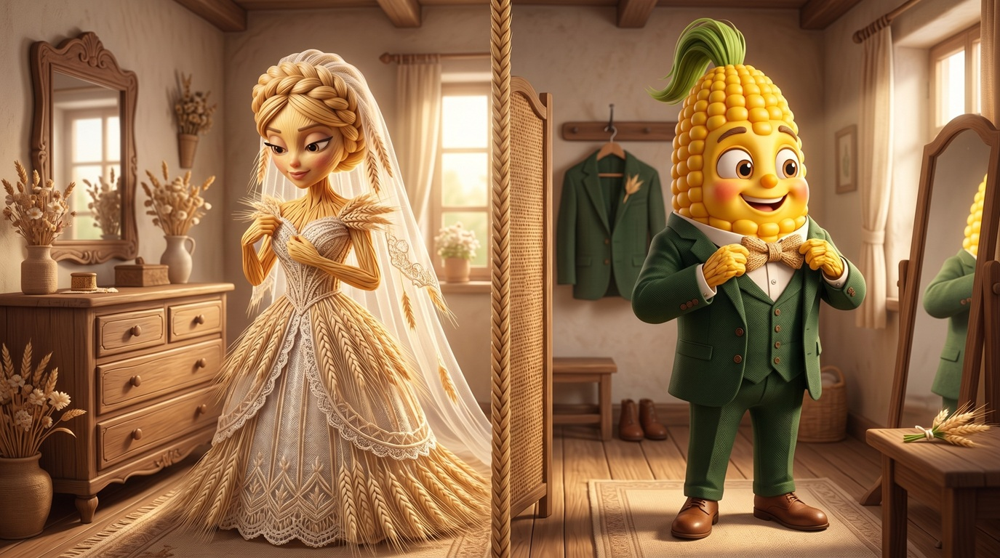
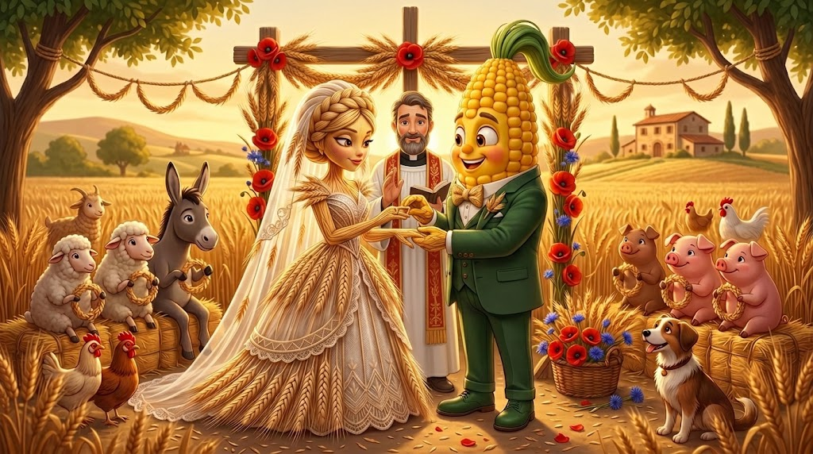
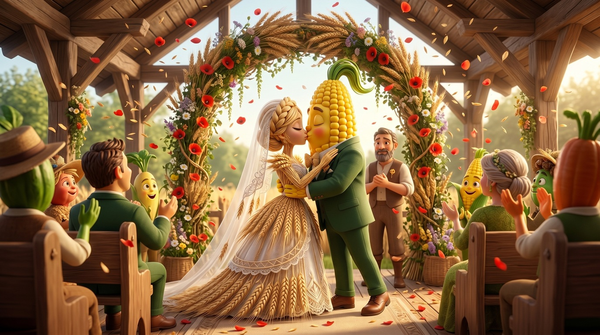
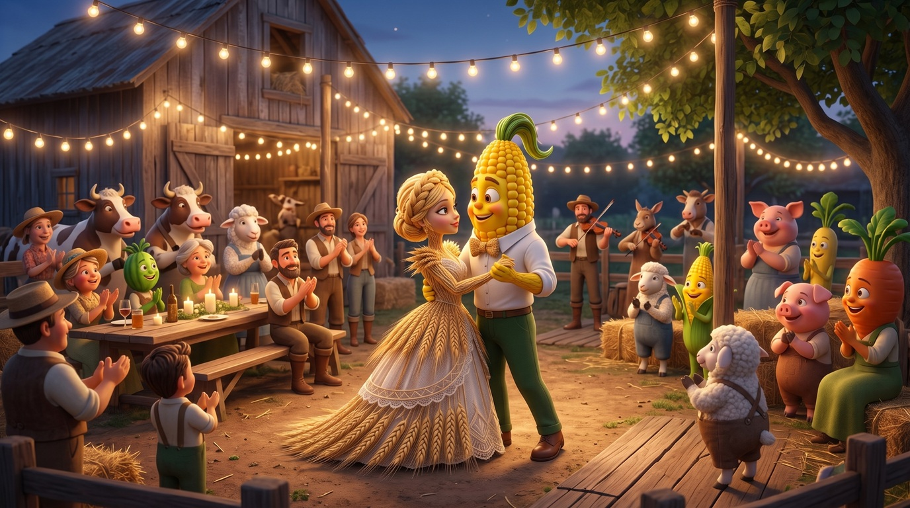
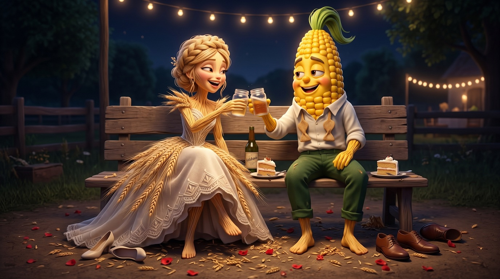
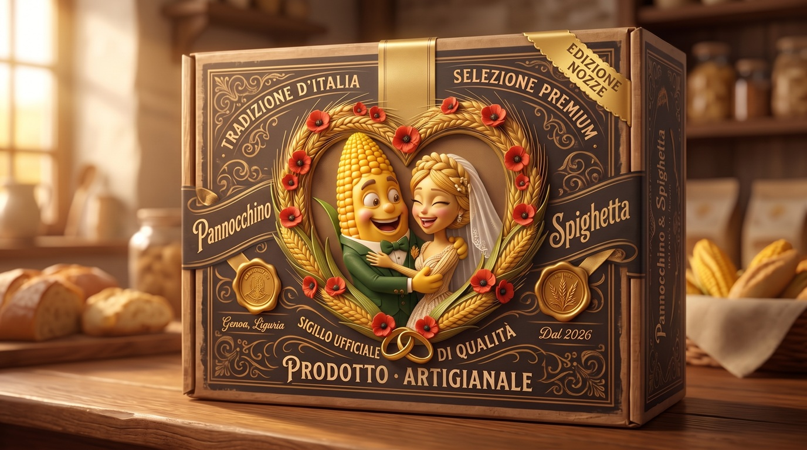
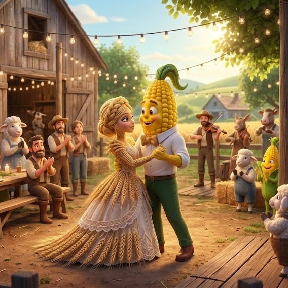
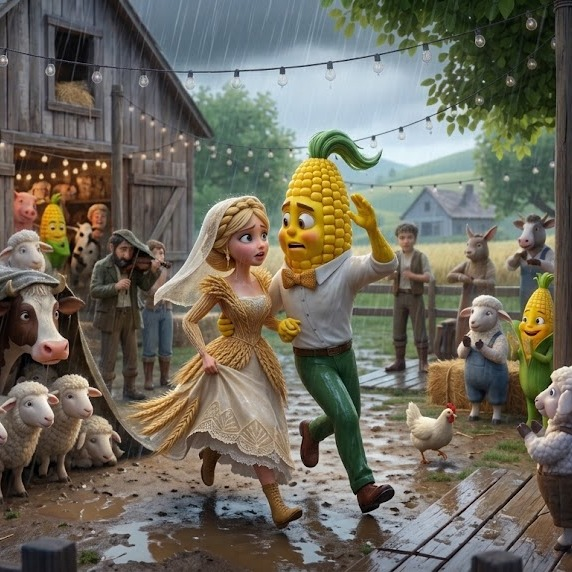
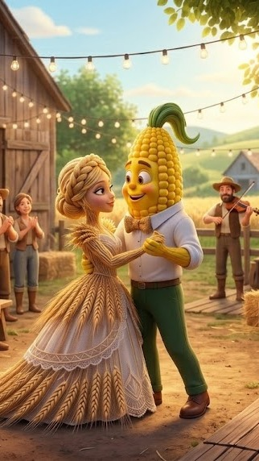

Campaign Example · DCO Variant Pool · OVERVIEW
Automatic Storyboard: Meet Pannocchino e Spighetta
Pannocchino and Spighetta are two farm mascots — a corn cob and a wheat stalk — devised for this demo, along with the farm they live on and the two baked-goods products the farm sells. This post fixes their identity for the first time and runs them through a short but complete storyboard: their wedding. The storyboard introduces a product we see in the story's final image: Torta Spighetta, Wedding Edition, a cake made essentially from two ingredients — wheat and corn — in the style of Torta Bertolda (or Bertoldina), the classic rustic cake of Lombard peasant tradition made from corn flour and wheat flour. The sibling post, Pannocchino e Spighetta have a baby, reuses the same pair for a second story, the birth of their child, at a marginal setup cost close to zero. Pannocchino and Spighetta stay a fictional illustration: what this is meant to demonstrate is the mechanism (the pipeline) driving the story, not an actual client campaign. A note on roles: I wrote the brief for these stories myself, since the client is only simulated, to show how the engine works (described in The Engine: generation, control, export) — an engine that is independent of the cast, the settings, the brand and the stories, which in a real workflow have already been decided by other professional roles.
Prologue — the keyframe
The whole story that follows is anchored to the single shot The Keyframe, generated with AI from a description, or inherited from earlier creations (for details on the pairing of Diffusion Model and LLM, used in the VLMs that generate similar stories, see the technical post DCO Engine: technical description). The same image anchors the sibling birth story, told in the next post, Pannocchino e Spighetta have a baby. In practice this image is enough to define the characters' morphology and their positions in the story, while the background and events are described iteratively in each shot.

Story — the wedding
A full costume and setting change, start to finish — not a palette swap on the keyframe above. If identity retention survives a wedding gown, a grass-green suit, a dance floor and a late-night afterparty, it survives many kinds of imagery, as we'll see below.







Other scripts the same setup could run
Before generating the script for the sequence shown here, the same primitives — the reference pair, the field and the farmhouse, Torta Spighetta's wedding-occasion packaging — went through an LLM, which sketched other ways the same wedding could be told. None of these were turned into a storyboard, except for the birth of the baby.
- A version with the couple now settled and in love, baking cakes together. A baby is born along the way. That's the occasion to prepare and sell a new box: the first-foods edition (see Pannocchino e Spighetta have a baby).
- An elopement version — no guests at all, just the two of them and the farm animals as witnesses, the ceremony finished before anyone else wakes up.
- A rain-affected version — the two characters move into the barn mid-ceremony, animals and all, testing whether identity holds through a last-minute change of location.
- A renewal-of-vows version set years later, the same wreath now woven with dried wheat instead of fresh, the farmyard cast one generation older.
- A harvest-wedding variant — the ceremony folded into the farm's autumn harvest festival instead of standing alone, pumpkins and hay bales doubling as décor.
- A single-witness version — just the farm's oldest cow as the only guest, testing how far the "communal farm wedding" feeling survives once the crowd is removed entirely.
The pipeline mechanism behind it — the structured description file that drives each narrative sequence, and what the QA loop checks on each frame — is covered in The Engine: generation, control, export, via an LLM for the script and a VLM for the storyboard.
Each approved shot of this story leaves as a row in a feed, labelled by beat, slogan and format: the export that does it is chapter 06 of The Engine: generation, control, export.
Simulated engine output — the variant pool
A worked example of what the engine's last two stages — formats (Chapter 07) and export (Chapter 06), see The Engine: generation, control, export — would actually produce from this story, in the same spirit as the cake-brand example in ADV. Starting from the First Dance shot above, the engine stages a small pool of labelled variants for Torta Spighetta, Wedding Edition: two slogans (“Two cereal species, one field of affection” and “Different in origin, united to sweeten us”), re-cropped into the aspect ratios a real campaign would need; the weather axis is kept to the square format only, so the matrix doesn't multiply across every size. The five renders below are real crops from two actual stills — clear and rainy versions of the first dance — each one labelled with its variant tags and its slogan.

format:1:11 · event:first-dance · weather:clear · slogan:campo-affetti “Two cereal species, one field of affection”

format:1:11 · event:first-dance · weather:rain · slogan:campo-affetti “Two cereal species, one field of affection”

format:9:162 · event:first-dance · slogan:addolcirci “Different in origin, united to sweeten us”
Each labelled image above is exactly one row of the manifest described in chapter 06 of The Engine: generation, control, export — here we simulate that formatting/export stage by hand, using two real stills instead of a generated render pool.
Export: Manifest rows
The 11 fields every row carries (see chapter 06 of The Engine: generation, control, export for what each one is for), filled in for the sunny 1:1 variant above:
asset_id : torta-spighetta-primoballo-campoaffetti-ballo-1x1
brand : Torta Spighetta
product_line : Wedding Edition
story : Pannocchino e Spighetta get married
beat : first-dance
narrative_role : development
cast : Pannocchino, Spighetta
format : 1:1
reserved_zone : bottom 18% strip (y: 0.82–1.00), clear of both faces
variant_labels : [event:first-dance, weather:clear, slogan:campo-affetti]
qa_status : passed first try
review_status : approved
This Manifest is consumed by an ad-serving/DCO platform — the trafficking layer (Meta, Google/DV360, or an agency's own DSP) that actually publishes ads and swaps creative in real time. It reads variant_labels and format to pick the right row for each delivery slot and targeting rule; the engine itself never talks to the ad platform directly, only through this Manifest.
- Square (1:1) — the classic Instagram/Facebook feed unit, also used by Pinterest pins and Google Display's square ad slot. ↩
- Vertical (9:16) — full-screen vertical video: Instagram/Facebook Stories and Reels, TikTok, YouTube Shorts, Snapchat. ↩
- Widescreen (16:9) — YouTube in-stream/pre-roll, Facebook and LinkedIn link ads, and most CTV/programmatic display inventory. ↩
- Portrait (4:5) — Instagram and Facebook's taller feed unit, now the recommended default for single-image feed ads on both platforms. ↩